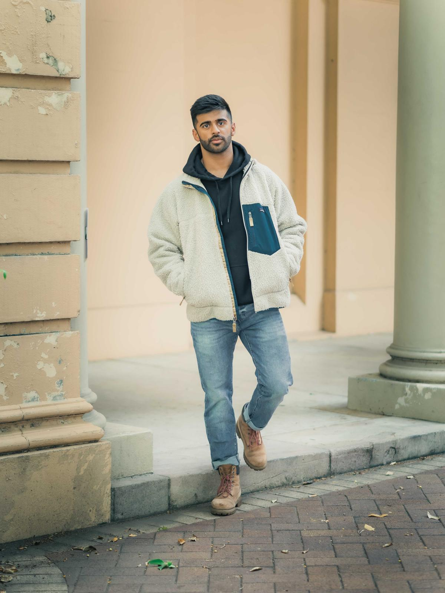
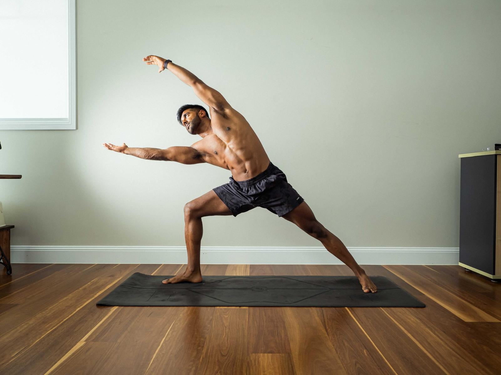

An unhurried practice in the pursuit of a longer, clearer life.
Vin’s Clinic is a small, telehealth medical practice
based in Bondi. The work: functional and integrative
medicine, root-cause assessment, and the daily
architecture of a body you plan to live in for a while.
An unhurried practice · Functional medicine · Alternative therapy · Root-cause care · Telehealth · Australia-wide ·An unhurried practice · Functional medicine · Alternative therapy · Root-cause care · Telehealth · Australia-wide ·
Dr Vin
A small clinic, patient by design.
Dr Patel sees a limited panel of patients and keeps it
that way on purpose. First visits are sixty minutes.
Follow-ups aren’t rushed. Notes get written by the
person who wrote your prescription.
It is built on an old idea, that medicine works better
when the doctor has time to think, and fitted with newer
tools: continuous metabolic data, thoughtful prescribing,
and a willingness to read the study before reaching for
the script pad.
Dr Vinay Patel, NSW
Services
Bespoke treatment.
No upsells, no packages. Each is a full conversation, grounded in functional medicine and ordered only where clinically appropriate. Three below sit at the centre of the practice. The rest are common enough to warrant naming.
01Individualised, clinical
Muscle Health
For people who train like they mean it, and want their
medicine to match. Structured assessment of connective
tissue, joint health, and recovery, with a plan
individualised to your history, your labs, and the
discipline you already bring to your programming.
Connective tissue
Joint health
Soft-tissue recovery
Training support
Individualised plans
02Quarterly, measured
Functional Health
A functional-medicine approach played in quarterly
increments. Comprehensive bloods, continuous glucose
data, body composition, aerobic capacity, sleep
architecture, and a written plan that evolves with your
life rather than against it.
Full panel bloods
CGM
DEXA
VO₂ max
Sleep architecture
Quarterly review
03Considered, clinical
Alternative Therapy
For patients whose story has not been fully answered by
conventional care. Assessment is thorough and
unhurried, every case considered on its own merits,
your history, what you have tried, and what a
functional-medicine lens can add. Any therapy is
considered only where clinically appropriate and within
Australian regulatory frameworks.
Root-cause assessment
Functional-medicine lens
Ongoing monitoring
Structured review
Also consulting on
Adjacent concerns that show up often in intake. Same workup, same honesty, same care for what the evidence does and does not say.
04Honest, clinical
Men’s Health
Hair thinning faster than expected, energy that dropped
and never came back, a body that quietly stopped
cooperating. Medical problems that respond well to a
proper workup, not character flaws.
Hair loss
Hormonal assessment
Energy
Mood
Ongoing management
05Medically supervised
Weight Management
Composition that will not shift, a metabolism that
stalled somewhere around thirty-five, appetite signals
that stopped making sense. Structured, with bloods
first and tools matched to the patient rather than the
marketing.
Metabolic health
Body composition
Appetite regulation
CGM
Ongoing monitoring
06Measured, not guessed
Sleep
You already know you are not sleeping well. We measure
what is actually happening, assess what is driving the
disruption, and build a plan around the findings, no
pamphlets on sleep hygiene.
Architecture
Circadian rhythm
Recovery
Hormonal impact
07Frank, confidential
Sexual Health
Erectile function that has changed, libido that
quietly disappeared, performance that is not what it
was. Judgment-free and clinically thorough, proper
history, the right bloods, and the options the
evidence actually supports.
Erectile function
Libido
Hormonal assessment
Cardiovascular screening
Confidential

Manchester → Sydney
The Doctor
Dr Vinay Patel.
Emergency-trained physician turned functional and
integrative medicine clinician — and the only doctor
you’ll meet at this clinic.
Vin qualified at the University of Manchester and spent
three years inside the NHS before moving to Australia,
where he worked two years in emergency departments
across QLD and NSW.
Since 2024 he has practised primarily via telehealth,
with a clinical focus on functional and integrative
medicine, root-cause assessment, and metabolic health.
He has seen the system at speed, from the resuscitation
bay to the script pad, and what he took away is this:
no patient has ever been helped by a rushed
conversation.
He is measured, direct, and genuinely curious about the
study before he is curious about the prescription. He
reads carefully. He answers questions. He will tell you
when he does not know. Outside the clinic he trains as a
CrossFit athlete — which is to say he practises
what he prescribes, early, and with the bar loaded.
Registration
AHPRA · Medical Practitioner, NSW
Qualifications
MBChB, The University of Manchester
Before this
NHS, United Kingdom
Emergency Medicine, Queensland
Special interest
Functional medicine, metabolic health, recovery
Outside the clinic
Ocean swims, rings, competitive CrossFit, making
friends with dogs
The nurse practitioners.
Bambi handles intake. Tinkerbell handles the rest.
Approach
The arc of a visit.
Four steps, over four to six weeks, in the order below. You
hear from Vin at every one.
i · Intake
A real first conversation.
Sixty minutes. History, goals, what you've already tried, labs to run.
ii · Baseline
Measure, then prescribe.
Full panel, body composition, sleep and metabolic data. No guessing.
iii · Protocol
A plan you can read.
Written out in full. What you're taking, why, what to watch for.
iv · Follow-up
Ongoing, honest, adjusted.
Check-ins every few weeks. We change what isn't working. Directly.

Practice, not preach · Bondi
In practice
The most valuable medicine I practice is the time to ask a second question.
Dr Vinay Patel
Contact
Request an intake.
New-patient inquiries are reviewed weekly. Include a note
on what you are hoping to address, a paragraph is plenty.
Vin reads every one, and will offer a free ten-minute
call to talk through options before you commit to
anything.